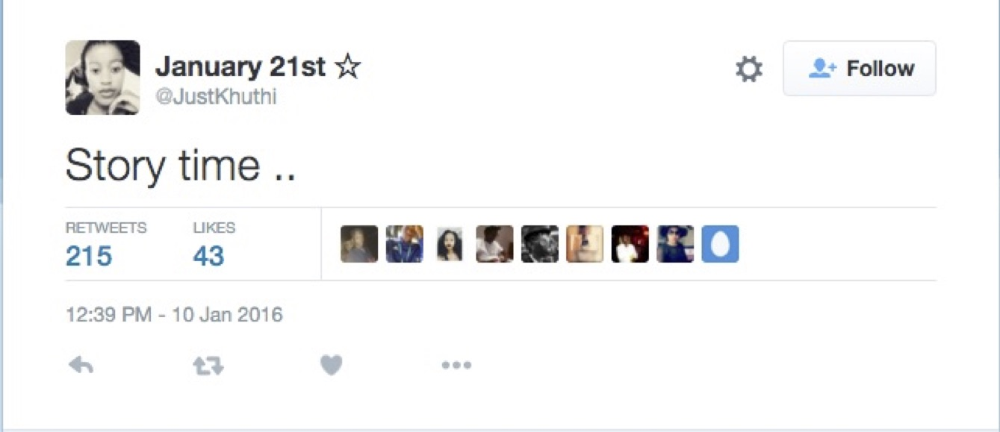

Everybody has a story. And everything does too
JUST A MATCH?
Why is it called a match? - Where stood the tree of which is was made? - Who made it? - Is it true that only a century ago little girls would roam city streets to sell matches to Gentlemen?
Girls from South Africa gets worldwide attention - with one story:
In a series of 70 numbered tweets sent over several hours, user @JustKhuthi told the story of the disappearance and eventual death of her childhood friend Kamo Peterson, a young actuarial science graduate heading for a career in professional tennis.

Only that it wasn't true. The hint that the story was fiction not fact was in this tweet, not numbered and sent before all the rest. It says: "Story time ... "